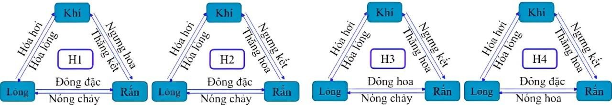
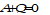
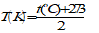
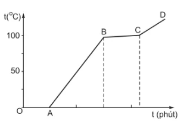
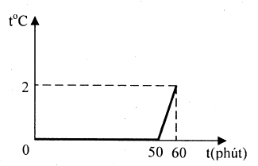

Câu 1.1: Các nguyên tử trong một miếng sắt có tính chất nào sau đây?
A. Khi nhiệt độ tăng thì nở ra. B.Khi nhiệt độ giảm thì co lại.
C.Đứng rất gần nhau. D.Đứng xa nhau.
Nội dung trích từ đề cương gốc
Bài 1. Cấu trúc của các chất. Sự chuyển thể
A. Khi nhiệt độ tăng thì nở ra. B.Khi nhiệt độ giảm thì co lại.
C.Đứng rất gần nhau. D.Đứng xa nhau.
A.có lực tương tác giữa các phân tử rất mạnh. B.có lực tương tác giữa các phân tử rất yếu.
C.không có hình dạng xác định. D.không có thể tích riêng xác định.
A.không chuyển động. B.đứng sát nhau.
C.chuyển động với vận tốc nhỏ không đáng kể.
D.chuyển động quanh một vị trí cân bằng xác định.
A. lực đẩy. B. lực hút. C. lực hút và lực đẩy. D. lực tương tác.
A.Bỏ cục nước đá vào một cốc nước. B. Đốt một ngọn nến.
C.Đốt một ngọn đèn dầu. D. Đúc một cái chuông đồng.
A. Kính cửa sổ bị mờ đi trong những ngày đông giá lạnh.
B.Cốc nước bị cạn dần khi để ngoài trời nắng.
C. Miếng bơ để bên ngoài tủ lạnh sau một thời gian bị chảy lỏng.
D. Đưa nước vào trong tủ lạnh để làm đá.
A.chỉ tồn tại ở thể lỏng. B. chỉ tồn tại ở thể hơi.
C.Tồn tại ở cả thể lỏng và thể hơi. D. Tồn tại ở cả thể lỏng, thể rắn và thể hơi.
A.Sương đọng trên lá cây. B. Khăn ướt sẽ khô khi được phơi ra nắng.
C.Đun nước đổ đầy ấm, nước có thể tràn ra ngoài.
D.Cục nước đá bỏ từ tủ đá ra ngoài, sau một thời gian, tan thành nước.
A. chất khí và chất lỏng. B. chất rắn và chất lỏng.
C. chất rắn và chất khí. D. các chất bất kì.

A. H1. B. H2. C. H3. D. H4
Bài 2: Nội năng. Định luật I của nhiệt động lực học
A. B. C. D.

A. Vật nhận nhiệt, nhiệt độ của vật tăng lên.
B. Vật truyền nhiệt, nhiệt độ của vật giảm.
C. Độ biến thiên nội năng của vật bằng tổng công và nhiệt lượng mà vật nhận được.
D. Độ biến thiên nội năng của vật bằng hiệu giữa công và nhiệt lượng mà vật nhận được
A. hệ truyền nhiệt và sinh công. B. hệ nhận nhiệt và sinh công.
C. hệ truyền nhiệt và nhận công. D. hệ nhận nhiệt và nhận công.
A. và  B.
B.  và
và  C.
C.  và
và  D.
D.  và
và 
A. . B. . C. . D. .
A. B. C. D.
A. hệ truyền nhiệt và sinh công. B. hệ nhận nhiệt và sinh công.
C. hệ truyền nhiệt và nhận công. D. hệ nhận nhiệt và nhận công.
A.  và
và  B.
B.  và C. và
và C. và  D.
D.  và
và
Bài 3. Nhiệt độ. Thang nhiệt độ. Nhiệt kế
A.. B.. C.. D..
A. thấp hơn 0∘C. B. cao hơn 0∘C. C. từ 35∘C đến 42∘C. D. từ 0∘C đến 100∘C.
A. 100 phần bằng nhau, mỗi phần ứng với 1∘C
B. 100 phần bằng nhau, mỗi phần ứng với 1∘K.
C. 100 phần bằng nhau, mỗi phần ứng với 1∘F.
D. 10 phần bằng nhau, mỗi phần ứng với 1∘C
A. Độ Kelvin (Kí hiệu K) B. Độ Celsius (Kí hiệu ∘C )
C. Độ Fahrenheit (Kí hiệu ∘F ) D. Cả 3 đáp án trên đều sai
A. Chì nóng chảy, nhiệt độ cơ thể người, ly nước trà đá, nước đá.
B. Ly nước trà đá, nước đá, chì nóng chảy, nhiệt độ cơ thể người.
C. Nước đá, ly nước trà đá, chì nóng chảy, nhiệt độ cơ thể người.
D. Nước đá, ly nước trà đá, nhiệt độ cơ thể người, chì nóng chảy.
A. 0 K và 100 K. B. 273 K và 373 K. C. 73 K và 37 K. D. 32 K và 212 K.
| A. 0 K B. 0∘C C. 273∘C | D. 273 K |
A. Vôn kế. B. Tốc kế. C. Cân đồng hồ. D. Nhiệt kế.
A. B. C.

D.Bài 4. Nhiệt dung riêng
A.. B.. C.. D..
A. 𝑄=𝑚𝑐(𝑡2−𝑡1) B. 𝑄 = 𝑚𝑐(𝑡2 + 𝑡1) C. 𝑄 = 𝑚𝑐(𝑡2. 𝑡1) D. 𝑄 = 𝑚𝑐(𝑡2/𝑡1)
A. Nhiệt độ lúc đầu của vật. B. Nhiệt độ lúc sau của vật.
C. Thời điểm bắt đầu vật nhận nhiệt lượng. D. Thời điểm sau khi vật nhận nhiệt lượng.
A. Chất A B. Chất B
C. Cả hai cần nhiệt như nhau. D. Không so sánh được.
A. Cho biết nhiệt lượng cần truyền để 1 kg chất đó tăng thêm 1∘C
B. Phụ thuộc vào khối lượng riêng của chất đó.
C. Phụ thuộc vào bản chất của chất đó.
D. Có đơn vị là J/kg.K.
A. nhiệt lượng cần thiết để làm cho 1 g đồng nóng lên thêm 1∘C là 380 J.
B. nhiệt lượng cần thiết để làm cho 2 g đồng nóng lên thêm 1∘C là 380 J.
C. nhiệt lượng cần thiết để làm cho 1 kg đồng nóng lên thêm 1∘C là 380 J.
D. nhiệt lượng cần thiết để làm cho 1 kg đồng nóng lên thêm 2∘C là 380 J.
Bài 5. Nhiệt nóng chảy riêng -2 câu.
A. Thể tích của vật. B. Nội năng của vật.
C. Nhiệt độ của vật. D. Hình dạng của vật.
A. Nhiệt nóng chảy của vật rắn là nhiệt lượng cung cấp cho vật rắn trong quá trình nóng chảy.
B. Đơn vị của nhiệt nóng chảy là Jun (J).
C. Các chất có khối lượng bằng nhau thì có nhiệt độ nóng chảy như nhau.
D. Nhiệt nóng chảy tính bằng công thức Q = m. λ trong đó λ là nhiệt nóng chảy riêng của chất làm vật, m là khối lượng của vật.
A. bản chất của vật rắn và áp suất ngoài.
B. bản chất của vật rắn.
C. bản chất và nhiệt độ của vật rắn
D. bản chất và nhiệt độ của vật rắn, đồng thời phụ thuộc áp suất ngoài.
A. Oát kế B. Nhiệt lượng kế C. Đồng hồ bấm giây D. Thước mét
A. Nóng chảy và bay hơi. B.Nóng chảy và đông đặc.
C. Bay hơi và đông đặc. D. Bay hơi và ngưng tụ.
Bài 6. Nhiệt hoá hơi riêng
A. Nhiệt lượng cần cung cấp cho khối chất lỏng trong quá trình sôi gọi là nhiệt hóa hơi của khối chất lỏng ở nhiệt độ sôi.
B. Nhiệt hóa hơi tỉ lệ với khối lượng của phần chất lỏng đã biến thành hơi.
C. Đơn vị của nhiệt hóa hơi là Jun trên kilôgam (J/kg).
D. Nhiệt hoá hơi được tính bằng công thức Q = m.L trong đó L là nhiệt hóa hơi riêng của chất lỏng, m là khối lượng của chất lỏng.
A.Một lượng nước bất kì cần thu một lượng nhiệt là 2,3.106 J để bay hơi hoàn toàn.
B.Mỗi kilogam nước cần thu một lượng nhiệt là 2,3.106 J để bay hơi hoàn toàn.
C.Mỗi kilogam nước sẽ tỏa ra một lượng nhiệt là 2,3.106 J khi bay hơi hoàn toàn ở nhiệt độ sôi.
D.Mỗi kilogam nước cần thu một lượng nhiệt là 2,3.106 J để bay hơi hoàn toàn ở nhiệt độ sôi và áp suất chuẩn.
A. Jun trên kilôgam độ (J/kg.độ). B. Jun trên kilôgam (J/kg).
C. Jun (J). D. Jun trên độ (J/ độ).
L = 2,26.106 J/kg. Để làm cho m = 200 g nước lấy ở t1 = 10°C sôi ở t2 = 100°C và 10% khối lượng của nó đã hóa hơi khi sôi thì cần cung cấp một nhiệt lượng gần giá trị nào nhất sau đây?
A. 169 kJ. B. 121 kJ. C. 189 kJ. D. 212 kJ.
A. Q = 205,96kJ B. Q = 619,96kJ C. Q = 159,96kJ D. Q = 460kJ
Bài 7: Bài tập về vật lí nhiệt
A. 380 J/kg.K B. 2500 J/kg.K C. 4200 J/kg.K D. 130 J/kg.K
A. 320C B. 300C C. 450C D. 500C
A.10 phút. B. 600 phút. C.10s. D. 1 giờ.
A. 3000 J B. 2500 J C. 2000 J D. 15000 J
A. 50 J. B. 60 J. C. 30 J. D. 70 J.
A.2,94J. B. 3,00J. C. 294J. D. 6,86J.
A. 30 J. B. 7 J. C. 3 J. D. 70 J.
| Phát biểu | Đúng | Sai |
| a. Chất khí không có hình dạng và thể tích riêng, luôn chiếm toàn bộ thể tích bình chứa và có thể nén được dễ dàng. | ||
| b. Vật ở thể rắn có thể tích và hình dạng riêng, rất khó nén. | ||
| c. Vật ở thể lỏng có thể tích riêng nhưng không có hình dạng riêng | ||
| d. Các chất không thể chuyển từ dạng này sang dạng khác |
| Phát biểu | Đúng | Sai |
| a. Khoảng cách giữa các phân tử lớn thì lực liên kết giữa chúng các yếu. | ||
| b. Các phân tử sắp xếp càng có trật tự thì lực liên kết giữa chúng càng mạnh. | ||
| c. Vật ở thể lỏng có thể tích và hình dạng riêng. | ||
| d. Vật ở thể rắn có thể tích và hình dạng riêng, rất khó nén. |
| Phát biểu | Đúng | Sai |
| a. Đoạn OA cho biết nước tồn tại ở cả thể rắn và thể lỏng | ||
| b. Đoạn CD cho biết nước không tồn tại ở thể lỏng | ||
| c. Đoạn AB cho biết nước đang tồn tại ở thể rắn | ||
| d. Đoạn BC cho biết nước đang sôi |

| Phát biểu | Đúng | Sai |
| a. Nhiệt độ sôi của chất X là 1600 | ||
| b. Nhiệt độ nóng chảy của chất X là 400 | ||
| c. Ở nhiệt độ 1200chất X chỉ tồn tại ở thể lỏng và khí | ||
| d. Ở nhiệt độ 400C chất X chỉ tồn tại ở cả thể rắn, thể lỏng và thể hơi |
| Phát biểu | Đúng | Sai |
| a. Nội năng của khí bị thay đổi bằng cách truyền nhiệt. | ||
| b. Theo quy ước: và | ||
| c. Nội năng của lượng khí tăng một lượng là là | ||
| d. Nếu chỉ cung cấp nhiệt lượng cho lượng khí trên thì lượng khí này giãn ra và thực hiện công lên môi trường xung quanh thì nội năng của lượng khí giảm một lượng là |
| Phát biểu | Đúng | Sai |
| a. Khối khí nhận nhiệt lượng nên | ||
| b. Công mà khối khí thực hiện là | ||
| c. Nếu trong quá trình này nội năng khối khí giảm đi thì nhiệt lượng | ||
| d. Nếu trong quá trình này nội năng khối khí tăng thêm thì nhiệt lượng |
| Phát biểu | Đúng | Sai |
| a. Người ta thực hiện công lên khối khí nên khối khí nhận công. | ||
| b. Do khối khí nhận công nên và có giá trị là | ||
| c. Khối khí truyền nhiệt ra môi trường bên ngoài nên và có giá trị là | ||
| d. Độ biến thiên nội năng của khí có giá trị là |
| Phát biểu | Đúng | Sai |
| a. Biểu thức nguyên lí I nhiệt động lực học trong trường hợp này là | ||
| b. Khối khí thực hiện công nên và có giá trị là | ||
| c. Khối khí trong xi lanh nhật nhiệt lượng là một lượng bằng | ||
| d. Độ biến thiên nội năng của khí có giá trị là |

| Phát biểu | Đúng | Sai |
| a. Thời gian nước đá nóng chảy là 60 phút. | ||
| b. 2kg nước đá đã tan hoàn toàn sau 50 phút và bắt đầutăng nhiệt độ từ phút thứ 50. | ||
| c. Nhiệt lượng cung cấp để làm tan chảy 2 kg nước đá trong chậu là 680 kJ. | ||
| d. Nhiệt lượng hỗn hợp nước trong chậu nhận được trong 10 phút cuối là 84 J. |
| Phát biểu | Đúng | Sai |
| a. Trong quá trình nóng chảy của nước đá nhiệt độ của nước đá không thay đổi bằng và nội năng giảm. | ||
| b. Nhiệt lượng tối thiểu cần cung cấp để làm tăng nhiệt độ của nước đá từ lên là | ||
| c. Nhiệt lượng tối thiểu cần cung cấp để làm nóng chảy hoàn toàn nước đá từ là 3760J. | ||
| d. Nhiệt lượng tối thiểu cần cung cấp để làm nóng chảy hoàn toàn nước đá ở cho đến khi nước bắt đầu sôi là |
| Phát biểu | Đúng | Sai |
| a. Lượng nhiệt để làm nóng chảy đá là | ||
| b. Lượng nhiệt thu để nâng nhiệt độ của nước ở đến nhiệt độ t là | ||
| c. Lượng nhiệt tỏa ra từ nước ở để giảm nhiệt độ xuống t là | ||
| d. Khi đạt cân bằng thì nhiệt độ cuối của cốc nước xấp xỉ bằng |